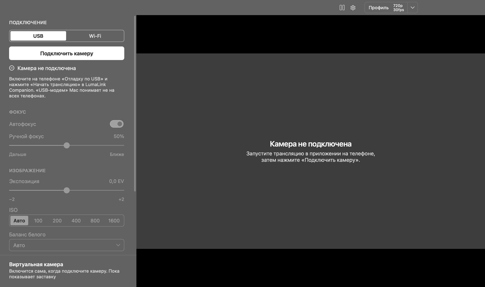

Ручные настройки камеры
Автофокус или ручной фокус, экспозиция, ISO, баланс белого, зум, основная или фронтальная камера — с компьютера.
Бесплатно и с открытым кодом
Подключите Android-телефон по USB или Wi-Fi и используйте его камеру в Zoom, Telegram, Discord и OBS. Фокус, экспозиция, ISO и баланс белого — прямо с компьютера.
Windows 10/11 · macOS 13+ (Apple Silicon и Intel) · Linux · Android 8+

Приложение LumaLink Companion берёт видео с камеры телефона и сжимает его аппаратным кодеком H.264.
По кабелю — через USB-модем или отладку по USB, без интернета. По Wi-Fi — в пределах одной домашней сети.
LumaLink Studio показывает картинку и передаёт её в виртуальную камеру, которую видят Zoom, Telegram, Discord, браузеры и OBS.
Автофокус или ручной фокус, экспозиция, ISO, баланс белого, зум, основная или фронтальная камера — с компьютера.
Профили 480p, 720p и 1080p при 30 или 60 кадрах в секунду. Телефон сообщает, где камера действительно даёт 60, и программа предлагает только доступное.
На Windows установщик добавляет LumaLink Camera — без драйверов ядра. На Mac камера пока работает через OBS Virtual Camera.
Если VPN блокирует локальную сеть, программа сама переключается на ADB, и подключение идёт прямо по кабелю.
Телефон отправляет только свежий кадр и ждёт подтверждения, поэтому видео не накапливает отставание.
Остановите картинку одной кнопкой. Пока телефон не подключён, виртуальная камера показывает аккуратную заставку.
Нужны две программы: LumaLink Studio на компьютер и LumaLink Companion на телефон.
Установщик с виртуальной камерой LumaLink Camera. Windows 10 и 11.
СкачатьM1 и новее. macOS 13 Ventura или новее.
СкачатьmacOS 13 Ventura или новее.
Скачатьx86-64: Ubuntu 22.04 и новее, Debian 12, Arch и другие. Виртуальная камера — через v4l2loopback.
Скачать Пакет .deb Пакет для ArchLumaLink Companion. Android 8.0 или новее.
СкачатьПриложение для iPhone пока не готово. Mac-версия не подписана сертификатом Apple: в первый раз откройте её через правый клик → «Открыть».
Видео передаётся без шифрования. По Wi-Fi новый компьютер нужно один раз разрешить на телефоне, поэтому чужие устройства не подключатся к камере без вашего ведома, но прочитать сам трафик в той же сети можно. Используйте Wi-Fi только в доверенной сети и закрывайте приложение на телефоне, когда камера не нужна. По USB видео не выходит за пределы кабеля.
VPN с блокировкой локальной сети не пропускает трафик к телефону. Для USB включите на телефоне «Отладку по USB» — программа пойдёт через ADB в обход VPN. Для Wi-Fi добавьте LumaLink Studio в исключения VPN.
Небольшая есть всегда: камера, кодирование, передача и показ занимают время. LumaLink держит её минимальной, не копя очередь кадров.
Зависит от телефона. Приложение применяет только то, что умеет камера, и ограничивает настройки её возможностями.
Приложение для iOS запланировано, но пока не сделано.